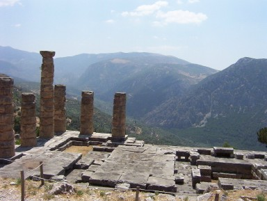

In the mountains, about a 45 minute drive from Athens, is Delphi. Delphi is where the oracle lived. An oracle
is someone who can "reputedly" predict the future. Delphi was accessible via a river running through the mountains
though today, we visit Delphi by bus or car. During each year, thousands of people -- emperor, generals of the army, the wealthy -- visited the oracle for
advice before going into battle, marrying, building a home, purchasing a service. How could the oracle "see into the future?' There are hot spews in the
mountains that spit out volcanic dust and fumes. It is believed that the oracle would breath in the fumes and
go into a sort of trance in which he would see the future and then provide advice to those who sought
it. According to our tour guide, however, it is most likely that the people visiting Delphi gave the oracle information
about what was going on in all parts of the civilized world. Thus, when a general sought advice about whether to attack another
region, the oracle knew the current preparedness of that country for defense and could give good advice about
whether the intended attack was going to be successful.